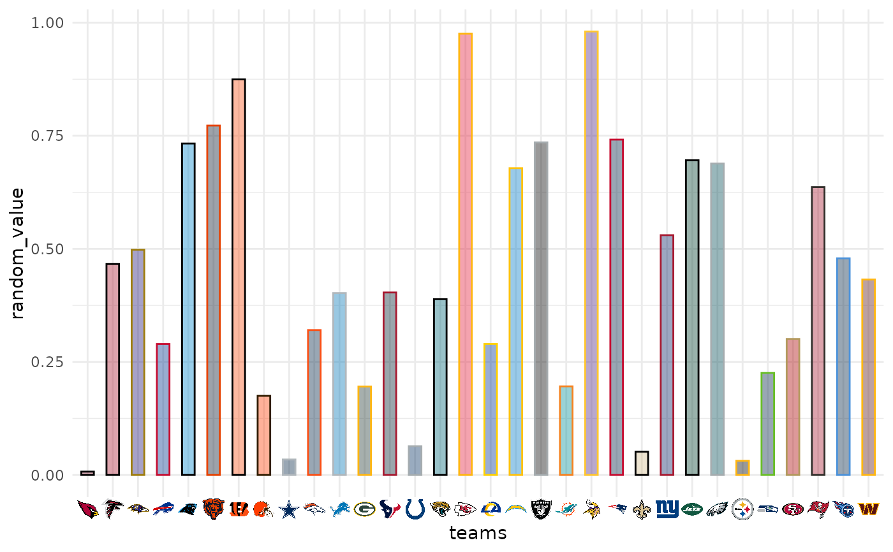
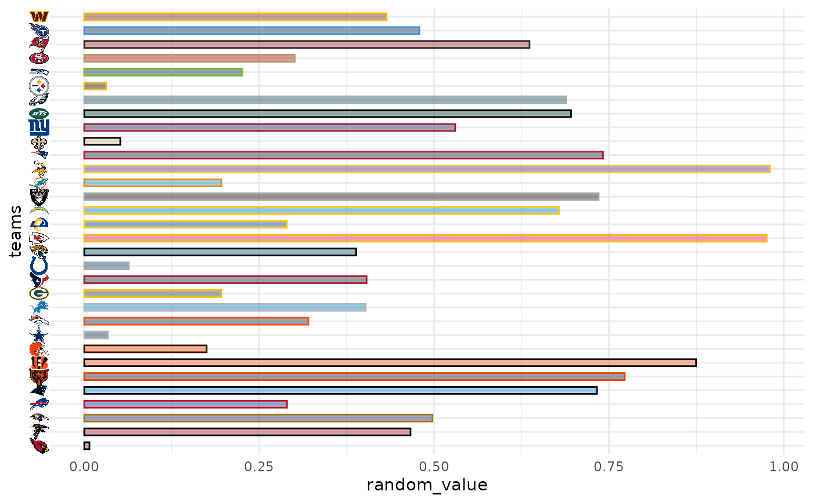
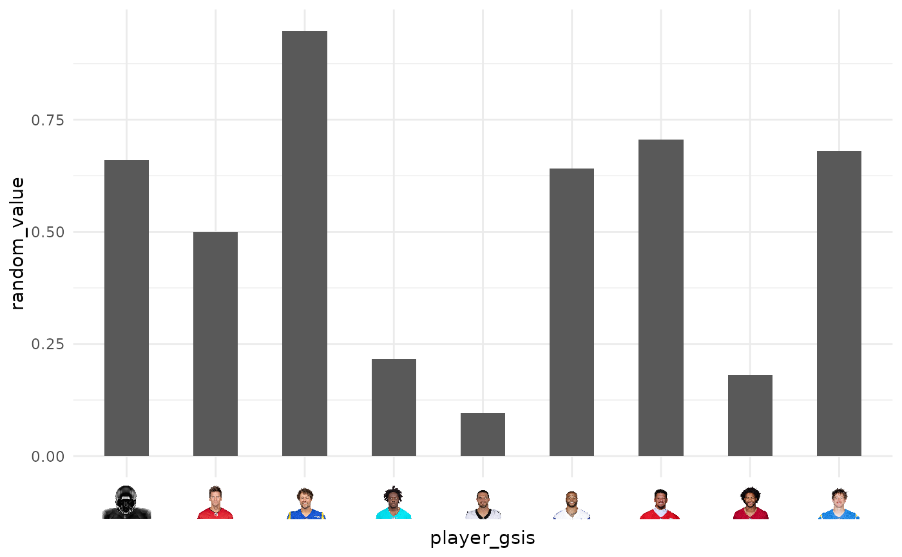
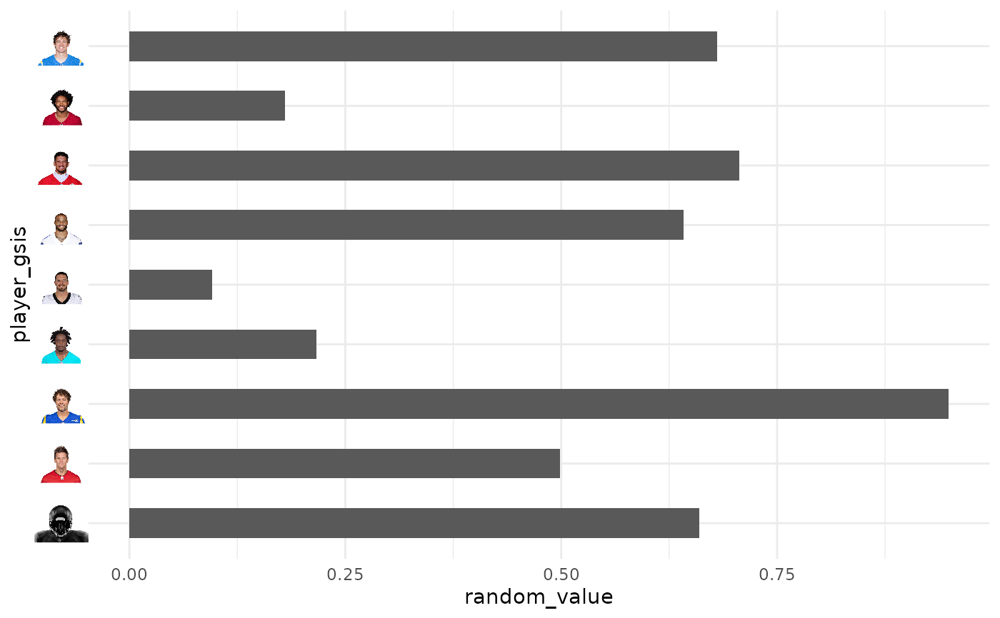
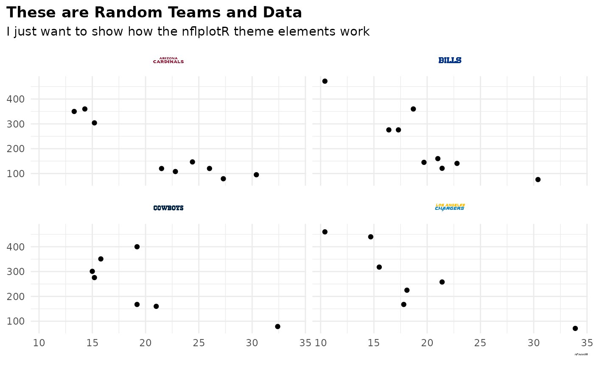

In conjunction with the ggplot2::theme system, the following element_
functions enable images in non-data components of the plot, e.g. axis text.
element_nfl_logo(): draws NFL team logos instead of their abbreviations.element_nfl_wordmark(): draws NFL team wordmarks instead of their abbreviations.element_nfl_headshot(): draws NFL player headshots instead of their GSIS IDs.ggpath::element_path(): draws images from valid image URLs instead of the URL.
Usage
element_nfl_logo(
alpha = 1L,
colour = NA_character_,
hjust = 0.5,
vjust = 0.5,
color = NULL,
angle = 0,
size = grid::unit(0.5, "cm")
)
element_nfl_wordmark(
alpha = 1L,
colour = NA_character_,
hjust = 0.5,
vjust = 0.5,
color = NULL,
angle = 0,
size = grid::unit(0.5, "cm")
)
element_nfl_headshot(
alpha = 1L,
colour = NA_character_,
hjust = 0.5,
vjust = 0.5,
color = NULL,
angle = 0,
size = grid::unit(0.5, "cm")
)Arguments
- alpha
The alpha channel, i.e. transparency level, as a numerical value between 0 and 1.
1Lskips alpha channel modification for more speed.- colour, color
The image will be colorized with this color. Defaults to
NA_character_which means no change of color at all. Use the special character"b/w"to set it to black and white. For more information on valid color names in ggplot2 see https://ggplot2.tidyverse.org/articles/ggplot2-specs.html?q=colour#colour-and-fill.- hjust
A numeric vector specifying horizontal justification. If specified, overrides the
justsetting.- vjust
A numeric vector specifying vertical justification. If specified, overrides the
justsetting.- angle
The angle of the element as a numerical value between 0° and 360°.
- size
The output grob size as a grid::unit. If given a numeric,
cmwill be applied as unit.
Details
The elements translate NFL team abbreviations or NFL player GSIS IDs into logo images or player headshots, respectively.
See also
geom_nfl_logos(), geom_nfl_headshots(), geom_nfl_wordmarks(),
and geom_from_path() for more information on valid team abbreviations,
player IDs, and other parameters.
The examples on https://nflplotr.nflverse.com/articles/nflplotR.html
Examples
# \donttest{
library(nflplotR)
library(ggplot2)
team_abbr <- valid_team_names()
# remove conference logos from this example
team_abbr <- team_abbr[!team_abbr %in% c("AFC", "NFC", "NFL")]
df <- data.frame(
random_value = runif(length(team_abbr), 0, 1),
teams = team_abbr
)
# use logos for x-axis
ggplot(df, aes(x = teams, y = random_value)) +
geom_col(aes(color = teams, fill = teams), width = 0.5) +
scale_color_nfl(type = "secondary") +
scale_fill_nfl(alpha = 0.4) +
theme_minimal() +
theme(axis.text.x.bottom = element_nfl_logo())

# use logos for y-axis
ggplot(df, aes(y = teams, x = random_value)) +
geom_col(aes(color = teams, fill = teams), width = 0.5) +
scale_color_nfl(type = "secondary") +
scale_fill_nfl(alpha = 0.4) +
theme_minimal() +
theme(axis.text.y.left = element_nfl_logo())

#############################################################################
# Headshot Examples
#############################################################################
library(nflplotR)
library(ggplot2)
# Silence an nflreadr message that is irrelevant here
old <- options(nflreadr.cache_warning = FALSE)
dfh <- data.frame(
random_value = runif(9, 0, 1),
player_gsis = c("00-0033873",
"00-0026498",
"00-0035228",
"00-0031237",
"00-0036355",
"00-0019596",
"00-0033077",
"00-0012345",
"00-0031280")
)
# use headshots for x-axis
ggplot(dfh, aes(x = player_gsis, y = random_value)) +
geom_col(width = 0.5) +
theme_minimal() +
theme(axis.text.x.bottom = element_nfl_headshot(size = 1))
#> ! No headshot available for gsis ID "00-0012345". Will insert placeholder.

# use headshots for y-axis
ggplot(dfh, aes(y = player_gsis, x = random_value)) +
geom_col(width = 0.5) +
theme_minimal() +
theme(axis.text.y.left = element_nfl_headshot(size = 1))
#> ! No headshot available for gsis ID "00-0012345". Will insert placeholder.

# Restore old options
options(old)
#############################################################################
# Wordmarks and other Images
#############################################################################
library(ggplot2)
dt <- data.table::as.data.table(mtcars)[,
`:=`(
team = sample(c("LAC", "BUF", "DAL", "ARI"), nrow(mtcars), TRUE),
player = sample(
c("00-0033873", "00-0035228", "00-0036355", "00-0019596"),
nrow(mtcars),
TRUE
)
)
]
ggplot(dt, aes(x = mpg, y = disp)) +
geom_point() +
facet_wrap(vars(team)) +
labs(
title = tools::toTitleCase("These are random teams and data"),
subtitle = "I just want to show how the nflplotR theme elements work",
caption = "https://github.com/nflverse/nflseedR/raw/master/man/figures/caption.png"
) +
theme_minimal() +
theme(
plot.title.position = "plot",
plot.title = element_text(face = "bold"),
axis.title = element_blank(),
# make wordmarks of team abbreviations
strip.text = element_nfl_wordmark(size = 1),
# load image from url in caption
plot.caption = element_path(hjust = 1, size = 0.4)
)

# }